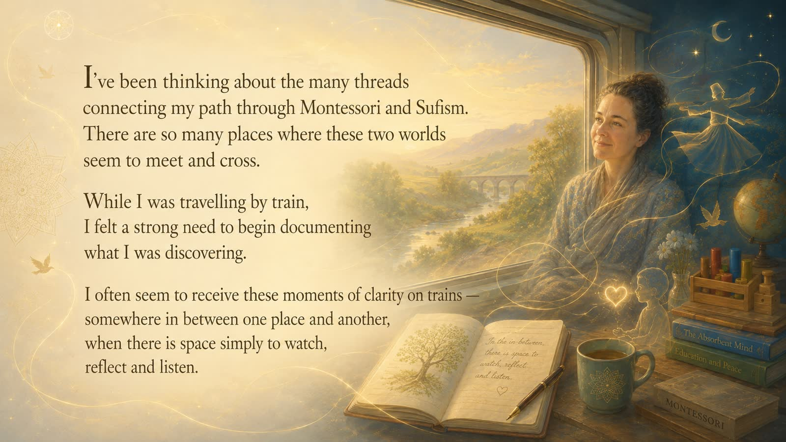
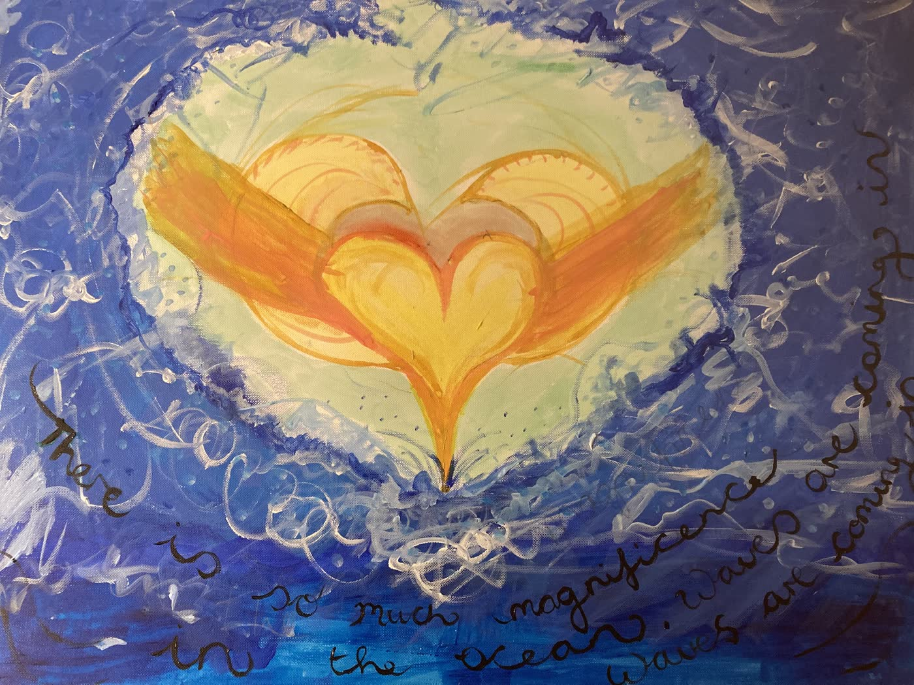
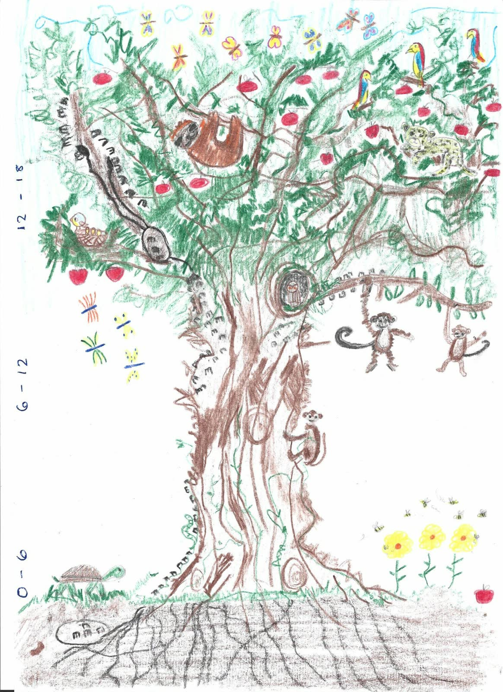
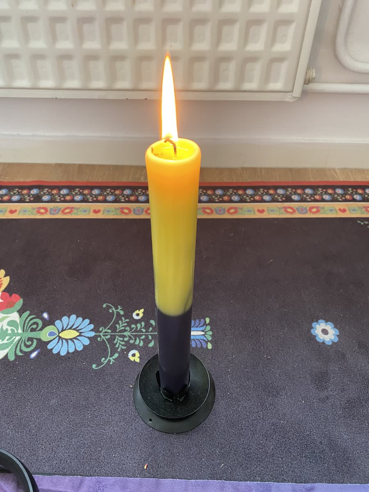

Threads of connection
Moments of clarity on trains
On the many threads connecting my path through Montessori and Sufism, and the places where these two worlds seem to meet.
Reflections from my Sufi path.
A more personal space: writing, paintings and questions I am living with. Perhaps Sufism is the invisible thread that runs through everything else on this site, and through the whole universe.
Read the reflections

How can we, as adults, give children the space to unfold from within and follow their own soul's journey?

On the many threads connecting my path through Montessori and Sufism, and the places where these two worlds seem to meet.

A space for future reflections from the Sufi path.
The thread is not that the traditions are the same, but that each asks how a human being can become more fully alive, connected and responsible.From "Threads of Connection", Hadi
Flowing forms, dotted paths, hearts and planets.
Everywhere, quietly.